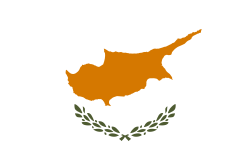

| Rank | Contestant | Country | Score for problems | Overall score | |||||||||||||
|---|---|---|---|---|---|---|---|---|---|---|---|---|---|---|---|---|---|
| A (/5) | B (/15) | C (/25) | D (/35) | E (/40) | F (/50) | G (/55) | H (/65) | I (/70) | J (/75) | K (/80) | L (/85) | M (/100) | Total (/700) | Percentage | |||
| 1st Gold | Pierre-Alexandre Séjourné⸸ |  Australia Australia | 5 | 15 | 25 | 35 | 40 | 50 | 55 | 65 | 57 (81%) | 45 (60%) | 80 | 80 (94%) | 100 | 652 | 93.14% |
| 2nd Silver | Hwang Min-Ji |  Rep. of Korea Rep. of Korea | 5 | 15 | 25 | 35 | 40 | 50 | 55 | 65 | 70 | 75 | 80 | 80 (94%) | 54 (54%) | 649 | 92.71% |
| 3rd Bronze | Natasha Shuyskaya⸸ |  Russia Russia | 5 | 15 | 25 | 35 | 40 | 50 | 55 | 65 | 70 | 75 | 73 (91%) | 79 (93%) | 45 (45%) | 632 | 90.29% |
| 4th Honorable Mention | Pedro Serrano⸸ |  Spain Spain | 5 | 15 | 25 | 35 | 40 | 50 | 55 | 65 | 63 (90%) | 67 (89%) | 80 | 85 | 35 (35%) | 620 | 88.57% |
| 5th Honorable Mention | Chen Mei Lin |  China China | 5 | 15 | 25 | 35 | 40 | 50 | 55 | 54 (83%) | 70 | 75 | 69 (86%) | 85 | 35 (35%) | 613 | 87.57% |
| 6th Honorable Mention | Amit Sharma | India | 5 | 15 | 25 | 35 | 40 | 50 | 55 | 65 | 70 | 74 (99%) | 62 (78%) | 65 (76%) | 33 (33%) | 594 | 84.86% |
| 7th Honorable Mention | Thiago Tanaka |  Brazil Brazil | 5 | 15 | 25 | 35 | 40 | 50 | 55 | 65 | 70 | 74 (99%) | 65 (81%) | 62 (73%) | 32 (32%) | 593 | 84.71% |
| 8th Honorable Mention | Karim Abdel-Aziz | Egypt | 5 | 15 | 25 | 35 | 40 | 50 | 55 | 65 | 70 | 75 | 65 (81%) | 60 (71%) | 30 (30%) | 590 | 84.29% |
| 9th Honorable Mention | Clara Johnson |  United States United States | 5 | 15 | 25 | 35 | 40 | 50 | 55 | 65 | 70 | 74 (99%) | 65 (81%) | 56 (66%) | 30 (30%) | 585 | 83.57% |
| 10th Honorable Mention | Jian Li | China | 5 | 15 | 25 | 35 | 40 | 50 | 55 | 65 | 70 | 72 (96%) | 63 (79%) | 55 (65%) | 30 (30%) | 580 | 82.86% |
| 11th Honorable Mention | Liam Zhang |  Canada Canada | 5 | 15 | 25 | 35 | 40 | 50 | 55 | 65 | 60 (86%) | 68 (91%) | 62 (78%) | 59 (69%) | 35 (35%) | 574 | 82% |
| 12th Honorable Mention | Matt Thompson⸸ | United States | 5 | 15 | 25 | 35 | 40 | 50 | 55 | 65 | 68 (97%) | 64 (85%) | 58 (73%) | 53 (62%) | 26 (26%) | 559 | 79.86% |
| 13th Honorable Mention | Kateryna Melnyk |  Ukraine Ukraine | 5 | 15 | 25 | 35 | 40 | 50 | 55 | 65 | 68 (97%) | 63 (84%) | 53 (66%) | 55 (65%) | 25 (25%) | 554 | 79.14% |
| 14th Honorable Mention | Chen Hao Ran | China | 5 | 15 | 25 | 35 | 40 | 50 | 52 (95%) | 63 (97%) | 70 | 75 | 44 (55%) | 40 (47%) | 25 (25%) | 539 | 77% |
| 15th Honorable Mention | Lai Min-Woo⸸ | Rep. of Korea | 5 | 15 | 25 | 35 | 40 | 50 | 55 | 65 | 64 (91%) | 66 (88%) | 35 (44%) | 49 (58%) | 17 (17%) | 521 | 74.43% |
| 16th Honorable Mention | Thanawat Suwannaket | Thailand | 5 | 15 | 25 | 35 | 40 | 49 (98%) | 53 (96%) | 63 (97%) | 62 (89%) | 58 (77%) | 51 (64%) | 48 (56%) | 16 (16%) | 520 | 74.29% |
| 17th Honorable Mention | Elias O'Malley | United States | 5 | 15 | 25 | 35 | 40 | 50 | 49 (89%) | 58 (89%) | 59 (84%) | 54 (72%) | 48 (60%) | 44 (52%) | 10 (10%) | 492 | 70.29% |
| 18th Honorable Mention | Arnav Singh | India | 5 | 15 | 25 | 35 | 40 | 50 | 42 (76%) | 58 (89%) | 55 (79%) | 50 (67%) | 47 (59%) | 45 (53%) | 10 (10%) | 477 | 68.14% |
| 19th Honorable Mention | Felix Patel |  Germany Germany | 5 | 15 | 25 | 35 | 40 | 50 | 42 (76%) | 57 (88%) | 53 (76%) | 50 (67%) | 44 (55%) | 42 (49%) | 10 (10%) | 468 | 66.86% |
| 20th Honorable Mention | Jakub Novak |  Czech Rep. Czech Rep. | 5 | 15 | 25 | 35 | 40 | 40 (80%) | 39 (71%) | 54 (83%) | 52 (74%) | 50 (67%) | 40 (50%) | 40 (47%) | 10 (10%) | 445 | 63.57% |
| 21st Honorable Mention | Turusan Celebioglu⸸ |  Türkiye Türkiye | 5 | 15 | 25 | 35 | 40 | 32 (64%) | 55 | 52 (80%) | 37 (53%) | 38 (51%) | 80 | 18 (21%) | 10 (10%) | 442 | 63.14% |
| 22nd Honorable Mention | Jan Kowalski |  Poland Poland | 5 | 15 | 25 | 35 | 40 | 50 | 38 (69%) | 54 (83%) | 48 (69%) | 42 (56%) | 33 (41%) | 43 (51%) | 8 (8%) | 436 | 62.29% |
| 23rd Honorable Mention | Ayan Mukherjee | India | 5 | 15 | 25 | 35 | 40 | 50 | 49 (89%) | 45 (69%) | 46 (66%) | 44 (59%) | 34 (43%) | 37 (44%) | 5 (5%) | 430 | 61.43% |
| 24th Honorable Mention | Jun Hao Tan |  Singapore Singapore | 5 | 15 | 25 | 35 | 40 | 50 | 50 (91%) | 46 (71%) | 43 (61%) | 46 (61%) | 29 (36%) | 25 (29%) | 5 (5%) | 414 | 59.14% |
| 25th Honorable Mention | Farzad Rezaei⸸ |  Iran Iran | 5 | 15 | 25 | 35 | 40 | 43 (86%) | 55 | 65 | 40 (57%) | 34 (45%) | 27 (34%) | 25 (29%) | 3 (3%) | 412 | 58.86% |
| 26th Participant | Aleksei Petrov⸸ | Russia | 5 | 15 | 25 | 35 | 40 | 50 | 55 | 32 (49%) | 20 (29%) | 43 (57%) | 60 (75%) | 20 (24%) | 11 (11%) | 411 | 58.71% |
| 27th Participant | Dmitri Ivanov | Russia | 5 | 15 | 25 | 35 | 40 | 50 | 55 | 65 | 25 (36%) | 39 (52%) | 39 (49%) | 4 (5%) | 13 (13%) | 410 | 58.57% |
| 28th Participant | David Cohen⸸ |  Israel Israel | 5 | 15 | 25 | 35 | 40 | 50 | 44 (80%) | 43 (66%) | 38 (54%) | 45 (60%) | 48 (60%) | 11 (13%) | 9 (9%) | 408 | 58.29% |
| 29th Participant | Taro Yamada |  Japan Japan | 5 | 15 | 25 | 35 | 37 (93%) | 19 (38%) | 35 (64%) | 50 (77%) | 50 (71%) | 11 (15%) | 78 (98%) | 38 (45%) | 6 (6%) | 404 | 57.71% |
| 30th Participant | Markus Haugen | Norway | 5 | 15 | 25 | 35 | 40 | 22 (44%) | 13 (24%) | 39 (60%) | 59 (84%) | 44 (59%) | 44 (55%) | 56 (66%) | 5 (5%) | 402 | 57.43% |
| 31st Participant | Przemysław Wójcik⸸ | Poland | 5 | 15 | 25 | 35 | 40 | 50 | 38 (69%) | 36 (55%) | 57 (81%) | 39 (52%) | 33 (41%) | 17 (20%) | 10 (10%) | 400 | 57.14% |
| 32nd Participant | Georgi Stoyanov | Bulgaria | 5 | 15 | 25 | 35 | 40 | 50 | 55 | 24 (37%) | 20 (29%) | 27 (36%) | 78 (98%) | 21 (25%) | 3 (3%) | 398 | 56.86% |
| 33rd Participant | Yu Xiang | Taiwan | 5 | 15 | 25 | 35 | 40 | 50 | 55 | 39 (60%) | 26 (37%) | 45 (60%) | 51 (64%) | 4 (5%) | 7 (7%) | 397 | 56.71% |
| 34th Participant | Elias Koskinen | Finland | 5 | 15 | 25 | 35 | 40 | 50 | 55 | 30 (46%) | 68 (97%) | 53 (71%) | 10 (13%) | 1 (1%) | 9 (9%) | 396 | 56.57% |
| 35th Participant | Kai Chen |  United Kingdom United Kingdom | 5 | 15 | 25 | 31 (89%) | 3 (8%) | 32 (64%) | 39 (71%) | 58 (89%) | 24 (34%) | 53 (71%) | 55 (69%) | 45 (53%) | 10 (10%) | 395 | 56.43% |
| 36th Participant | Amirul Hakim | Malaysia | 5 | 15 | 25 | 35 | 40 | 50 | 55 | 51 (78%) | 11 (16%) | 15 (20%) | 35 (44%) | 55 (65%) | 2 (2%) | 394 | 56.29% |
| 37th Participant | Kenichi Nakamura⸸ | Japan | 5 | 15 | 25 | 35 | 40 | 50 | 55 | 27 (42%) | 29 (41%) | 9 (12%) | 76 (95%) | 26 (31%) | 1 (1%) | 393 | 56.14% |
| 38th Participant | Gaspard Le Roux | France | 5 | 15 | 25 | 35 | 40 | 50 | 7 (13%) | 59 (91%) | 69 (99%) | 26 (35%) | 26 (33%) | 26 (31%) | 9 (9%) | 392 | 56% |
| 39th Participant | Kim Ji-Hoon | Rep. of Korea | 5 | 15 | 25 | 35 | 40 | 50 | 55 | 65 | 42 (60%) | 45 (60%) | 4 (5%) | 2 (2%) | 8 (8%) | 391 | 55.86% |
| 40th Participant | David Tepes |  Italy Italy | 5 | 15 | 25 | 35 | 3 (8%) | 35 (70%) | 11 (20%) | 57 (88%) | 55 (79%) | 46 (61%) | 67 (84%) | 34 (40%) | 2 (2%) | 390 | 55.71% |
| 41st Participant | Aizhan Alimzhan |  Kazakhstan Kazakhstan | 5 | 15 | 25 | 35 | 40 | 50 | 55 | 47 (72%) | 7 (10%) | 19 (25%) | 74 (93%) | 12 (14%) | 5 (5%) | 389 | 55.57% |
| 42nd Participant | Tirta Wardhana | Indonesia | 5 | 15 | 25 | 35 | 40 | 50 | 15 (27%) | 57 (88%) | 13 (19%) | 59 (79%) | 16 (20%) | 57 (67%) | 1 (1%) | 388 | 55.43% |
| 43rd Participant | Bartosz Nowak | Poland | 5 | 15 | 25 | 35 | 40 | 50 | 49 (89%) | 22 (34%) | 31 (44%) | 23 (31%) | 39 (49%) | 47 (55%) | 6 (6%) | 387 | 55.29% |
| 44th Participant | Elif Su | Türkiye | 5 | 15 | 25 | 35 | 40 | 50 | 55 | 24 (37%) | 61 (87%) | 14 (19%) | 28 (35%) | 30 (35%) | 4 (4%) | 386 | 55.14% |
| 45th Participant | Olena Kostiuk⸸ | Ukraine | 5 | 15 | 25 | 35 | 40 | 50 | 55 | 45 (69%) | 26 (37%) | 48 (64%) | 17 (21%) | 19 (22%) | 5 (5%) | 385 | 55% |
| 46th Participant | Tsvetelina Dimitrova | Bulgaria | 5 | 15 | 25 | 35 | 40 | 39 (78%) | 39 (71%) | 18 (28%) | 44 (63%) | 41 (55%) | 78 (98%) | 2 (2%) | 3 (3%) | 384 | 54.86% |
| 47th Participant | Derya Ayşe⸸ | Türkiye | 0 | 6 (40%) | 5 (20%) | 8 (23%) | 0 | 39 (78%) | 29 (53%) | 59 (91%) | 63 (90%) | 37 (49%) | 72 (90%) | 58 (68%) | 7 (7%) | 383 | 54.71% |
| 48th Participant | Blaž Novak | Slovenia | 5 | 15 | 25 | 35 | 40 | 50 | 55 | 48 (74%) | 15 (21%) | 17 (23%) | 21 (26%) | 48 (56%) | 8 (8%) | 382 | 54.57% |
| 49th Participant | Bálint Nagy | Hungary | 5 | 15 | 25 | 35 | 40 | 50 | 26 (47%) | 58 (89%) | 30 (43%) | 21 (28%) | 46 (58%) | 25 (29%) | 5 (5%) | 381 | 54.43% |
| 50th Participant | Rehua Jones | New Zealand | 5 | 15 | 25 | 35 | 40 | 50 | 30 (55%) | 52 (80%) | 14 (20%) | 17 (23%) | 68 (85%) | 28 (33%) | 1 (1%) | 380 | 54.29% |
| 51st Participant | Danish Haziq | Malaysia | 5 | 15 | 25 | 35 | 40 | 50 | 55 | 21 (32%) | 50 (71%) | 23 (31%) | 37 (46%) | 17 (20%) | 6 (6%) | 379 | 54.14% |
| 52nd Participant | Daniyar Nurlan | Kazakhstan | 5 | 15 | 25 | 35 | 40 | 50 | 38 (69%) | 55 (85%) | 31 (44%) | 3 (4%) | 62 (78%) | 13 (15%) | 6 (6%) | 378 | 54% |
| 53rd Participant | Bohdan Melnyk | Ukraine | 5 | 15 | 25 | 35 | 40 | 46 (92%) | 10 (18%) | 28 (43%) | 66 (94%) | 20 (27%) | 61 (76%) | 22 (26%) | 4 (4%) | 377 | 53.86% |
| 54th Participant | Dan Constantin⸸ | Moldova | 5 | 15 | 25 | 35 | 40 | 21 (42%) | 14 (25%) | 36 (55%) | 58 (83%) | 42 (56%) | 51 (64%) | 32 (38%) | 2 (2%) | 376 | 53.71% |
| 55th Participant | Anahit Hovhannisyan | Armenia | 5 | 15 | 25 | 35 | 40 | 50 | 55 | 35 (54%) | 19 (27%) | 7 (9%) | 68 (85%) | 21 (25%) | 0 | 375 | 53.57% |
| 56th Participant | Hiroshi Sato | Japan | 5 | 15 | 25 | 35 | 26 (65%) | 37 (74%) | 39 (71%) | 44 (68%) | 57 (81%) | 29 (39%) | 1 (1%) | 58 (68%) | 3 (3%) | 374 | 53.43% |
| 57th Participant | Satria Aji⸸ | Indonesia | 5 | 15 | 25 | 35 | 40 | 50 | 30 (55%) | 23 (35%) | 55 (79%) | 15 (20%) | 42 (53%) | 37 (44%) | 1 (1%) | 373 | 53.29% |
| 58th Participant | Uroš Marković⸸ | Serbia | 5 | 15 | 25 | 35 | 40 | 50 | 28 (51%) | 59 (91%) | 11 (16%) | 67 (89%) | 10 (13%) | 22 (26%) | 5 (5%) | 372 | 53.14% |
| 59th Participant | Almazbek Atambayev |  Kyrgyzstan Kyrgyzstan | 5 | 15 | 25 | 35 | 25 (63%) | 33 (66%) | 28 (51%) | 9 (14%) | 20 (29%) | 54 (72%) | 75 (94%) | 42 (49%) | 5 (5%) | 371 | 53% |
| 60th Participant | Ho Sze Nga⸸ | Hong Kong | 5 | 15 | 25 | 35 | 40 | 50 | 55 | 50 (77%) | 4 (6%) | 33 (44%) | 15 (19%) | 34 (40%) | 9 (9%) | 370 | 52.86% |
| 61st Participant | Leung Chun Hin | Hong Kong | 5 | 15 | 25 | 35 | 18 (45%) | 37 (74%) | 3 (5%) | 57 (88%) | 27 (39%) | 35 (47%) | 61 (76%) | 49 (58%) | 2 (2%) | 369 | 52.71% |
| 62nd Participant | Zhè Hóng | Taiwan | 5 | 15 | 25 | 35 | 40 | 50 | 55 | 50 (77%) | 52 (74%) | 15 (20%) | 12 (15%) | 9 (11%) | 5 (5%) | 368 | 52.57% |
| 63rd Participant | Radostina Ivanova | Bulgaria | 5 | 15 | 25 | 35 | 40 | 50 | 55 | 31 (48%) | 25 (36%) | 36 (48%) | 7 (9%) | 42 (49%) | 1 (1%) | 367 | 52.43% |
| 64th Participant | Florian Mayer | Austria | 5 | 15 | 25 | 35 | 40 | 50 | 34 (62%) | 11 (17%) | 56 (80%) | 38 (51%) | 33 (41%) | 18 (21%) | 6 (6%) | 366 | 52.29% |
| 65th Participant | Chloé Dubois | France | 5 | 15 | 25 | 35 | 40 | 50 | 34 (62%) | 42 (65%) | 18 (26%) | 54 (72%) | 20 (25%) | 21 (25%) | 6 (6%) | 365 | 52.14% |
| 66th Participant | Yí Xuān | Taiwan | 5 | 15 | 25 | 35 | 40 | 49 (98%) | 5 (9%) | 30 (46%) | 0 | 43 (57%) | 77 (96%) | 36 (42%) | 4 (4%) | 364 | 52% |
| 67th Participant | Mateo Ramírez⸸ | Argentina | 5 | 15 | 25 | 35 | 18 (45%) | 25 (50%) | 23 (42%) | 43 (66%) | 31 (44%) | 53 (71%) | 38 (48%) | 49 (58%) | 3 (3%) | 363 | 51.86% |
| 68th Participant | Aristotelis Theodorakis |  Greece Greece | 5 | 15 | 25 | 35 | 29 (73%) | 21 (42%) | 0 | 58 (89%) | 69 (99%) | 13 (17%) | 64 (80%) | 26 (31%) | 2 (2%) | 362 | 51.71% |
| 69th Participant | Clara Müller | Germany | 3 (60%) | 5 (33%) | 6 (24%) | 4 (11%) | 7 (18%) | 28 (56%) | 8 (15%) | 37 (57%) | 62 (89%) | 68 (91%) | 75 (94%) | 53 (62%) | 5 (5%) | 361 | 51.57% |
| 70th Participant | Lorenzo Rossi | Italy | 5 | 15 | 25 | 35 | 38 (95%) | 19 (38%) | 8 (15%) | 35 (54%) | 26 (37%) | 47 (63%) | 56 (70%) | 51 (60%) | 0 | 360 | 51.43% |
| 71st Participant | Amar Alić | Bosnia | 5 | 15 | 25 | 35 | 31 (78%) | 39 (78%) | 15 (27%) | 27 (42%) | 49 (70%) | 39 (52%) | 56 (70%) | 15 (18%) | 8 (8%) | 359 | 51.29% |
| 72nd Participant | Beatriz Silva | Brazil | 5 | 15 | 25 | 35 | 40 | 7 (14%) | 13 (24%) | 40 (62%) | 54 (77%) | 34 (45%) | 41 (51%) | 49 (58%) | 0 | 358 | 51.14% |
| 73rd Participant | Zakaria Idrissi |  Morocco Morocco | 5 | 15 | 25 | 35 | 40 | 49 (98%) | 16 (29%) | 24 (37%) | 55 (79%) | 11 (15%) | 48 (60%) | 29 (34%) | 5 (5%) | 357 | 51% |
| 74th Participant | Chiara Rossi |  Switzerland Switzerland | 5 | 15 | 25 | 35 | 40 | 47 (94%) | 15 (27%) | 13 (20%) | 53 (76%) | 35 (47%) | 22 (28%) | 48 (56%) | 3 (3%) | 356 | 50.86% |
| 75th Participant | Jason Chen | Australia | 5 | 15 | 25 | 35 | 36 (90%) | 33 (66%) | 26 (47%) | 41 (63%) | 13 (19%) | 26 (35%) | 68 (85%) | 23 (27%) | 9 (9%) | 355 | 50.71% |
| 76th Participant | Thabo Mokoena⸸ |  South Africa South Africa | 5 | 15 | 25 | 35 | 40 | 46 (92%) | 0 | 54 (83%) | 25 (36%) | 15 (20%) | 59 (74%) | 29 (34%) | 6 (6%) | 354 | 50.57% |
| 77th Participant | Bayarmaa Bat-Erdene | Mongolia | 5 | 15 | 25 | 35 | 36 (90%) | 0 | 32 (58%) | 42 (65%) | 66 (94%) | 35 (47%) | 46 (58%) | 15 (18%) | 1 (1%) | 353 | 50.43% |
| 78th Participant | Jasper de Vries |  Netherlands Netherlands | 5 | 15 | 25 | 35 | 22 (55%) | 35 (70%) | 9 (16%) | 36 (55%) | 32 (46%) | 56 (75%) | 76 (95%) | 1 (1%) | 5 (5%) | 352 | 50.29% |
| 79th Participant | Mart Sepper⸸ | Estonia | 5 | 15 | 25 | 35 | 7 (18%) | 19 (38%) | 35 (64%) | 58 (89%) | 21 (30%) | 20 (27%) | 62 (78%) | 48 (56%) | 1 (1%) | 351 | 50.14% |
| 80th Participant | Arvid Olsson |  Sweden Sweden | 5 | 15 | 25 | 35 | 40 | 38 (76%) | 9 (16%) | 20 (31%) | 46 (66%) | 41 (55%) | 63 (79%) | 11 (13%) | 2 (2%) | 350 | 50% |
| 81st Participant | Efthymios Markopoulos | Greece | 5 | 15 | 25 | 35 | 40 | 45 (90%) | 32 (58%) | 30 (46%) | 16 (23%) | 37 (49%) | 30 (38%) | 35 (41%) | 4 (4%) | 349 | 49.86% |
| 82nd Participant | Elara van Dijk | Netherlands | 5 | 15 | 25 | 35 | 40 | 14 (28%) | 28 (51%) | 22 (34%) | 61 (87%) | 28 (37%) | 55 (69%) | 17 (20%) | 3 (3%) | 348 | 49.71% |
| 83rd Participant | Ivan Babić⸸ |  Croatia Croatia | 5 | 15 | 25 | 35 | 39 (98%) | 8 (16%) | 28 (51%) | 52 (80%) | 26 (37%) | 2 (3%) | 43 (54%) | 59 (69%) | 10 (10%) | 347 | 49.57% |
| 84th Participant | Kai Jie | Singapore | 5 | 15 | 25 | 35 | 37 (93%) | 6 (12%) | 19 (35%) | 26 (40%) | 54 (77%) | 52 (69%) | 53 (66%) | 19 (22%) | 0 | 346 | 49.43% |
| 85th Participant | Elena Ioannou | Cyprus | 5 | 15 | 25 | 35 | 12 (30%) | 21 (42%) | 27 (49%) | 31 (48%) | 33 (47%) | 48 (64%) | 60 (75%) | 24 (28%) | 9 (9%) | 345 | 49.29% |
| 86th Participant | Akhenaten Ibrahim | Egypt | 5 | 15 | 25 | 35 | 22 (55%) | 35 (70%) | 27 (49%) | 5 (8%) | 24 (34%) | 68 (91%) | 50 (63%) | 30 (35%) | 3 (3%) | 344 | 49.14% |
| 87th Participant | Parisa Akbari | Iran | 5 | 15 | 25 | 35 | 32 (80%) | 26 (52%) | 27 (49%) | 15 (23%) | 61 (87%) | 44 (59%) | 53 (66%) | 1 (1%) | 4 (4%) | 343 | 49% |
| 88th Participant | Phatrapol Jiradechapat | Thailand | 4 (80%) | 1 (7%) | 2 (8%) | 9 (26%) | 0 | 26 (52%) | 21 (38%) | 24 (37%) | 64 (91%) | 69 (92%) | 78 (98%) | 43 (51%) | 1 (1%) | 342 | 48.86% |
| 89th Participant | Ruslan Abbasov |  Azerbaijan Azerbaijan | 5 | 15 | 24 (96%) | 8 (23%) | 8 (20%) | 30 (60%) | 5 (9%) | 40 (62%) | 45 (64%) | 65 (87%) | 60 (75%) | 36 (42%) | 0 | 341 | 48.71% |
| 90th Participant | Dunja Jovanović | Serbia | 5 | 15 | 25 | 12 (34%) | 8 (20%) | 1 (2%) | 23 (42%) | 41 (63%) | 57 (81%) | 68 (91%) | 58 (73%) | 18 (21%) | 9 (9%) | 340 | 48.57% |
| 91st Participant | Zhi Qing | Singapore | 5 | 15 | 25 | 35 | 31 (78%) | 22 (44%) | 8 (15%) | 42 (65%) | 24 (34%) | 46 (61%) | 66 (83%) | 11 (13%) | 9 (9%) | 339 | 48.43% |
| 92nd Participant | Sarah Levi⸸ | Israel | 5 | 15 | 25 | 35 | 17 (43%) | 16 (32%) | 28 (51%) | 20 (31%) | 63 (90%) | 59 (79%) | 29 (36%) | 18 (21%) | 8 (8%) | 338 | 48.29% |
| 93rd Participant | Austėja Kazlauskaitė | Lithuania | 5 | 15 | 25 | 35 | 16 (40%) | 13 (26%) | 27 (49%) | 25 (38%) | 54 (77%) | 29 (39%) | 49 (61%) | 38 (45%) | 6 (6%) | 337 | 48.14% |
| 94th Participant | Mircea cel Bătrân⸸ | Romania | 5 | 2 (13%) | 1 (4%) | 2 (6%) | 5 (13%) | 23 (46%) | 23 (42%) | 59 (91%) | 52 (74%) | 50 (67%) | 71 (89%) | 33 (39%) | 10 (10%) | 336 | 48% |
| 95th Participant | Sol Pérez | Argentina | 5 | 15 | 25 | 35 | 11 (28%) | 1 (2%) | 38 (69%) | 59 (91%) | 60 (86%) | 25 (33%) | 50 (63%) | 7 (8%) | 4 (4%) | 335 | 47.86% |
| 96th Participant | Giorgi Abashidze |  Georgia Georgia | 5 | 15 | 25 | 35 | 35 (88%) | 30 (60%) | 18 (33%) | 47 (72%) | 7 (10%) | 27 (36%) | 71 (89%) | 12 (14%) | 7 (7%) | 334 | 47.71% |
| 97th Participant | Athisan Worapannya | Thailand | 5 | 15 | 17 (68%) | 6 (17%) | 9 (23%) | 15 (30%) | 23 (42%) | 29 (45%) | 23 (33%) | 56 (75%) | 77 (96%) | 49 (58%) | 9 (9%) | 333 | 47.57% |
| 98th Participant | Kabayan delos Reyes⸸ |  Philippines Philippines | 1 (20%) | 5 (33%) | 10 (40%) | 2 (6%) | 4 (10%) | 32 (64%) | 20 (36%) | 52 (80%) | 55 (79%) | 66 (88%) | 77 (96%) | 4 (5%) | 4 (4%) | 332 | 47.43% |
| 99th Participant | Ho Sze Nga | Macao | 5 | 15 | 10 (40%) | 9 (26%) | 7 (18%) | 31 (62%) | 28 (51%) | 37 (57%) | 64 (91%) | 43 (57%) | 31 (39%) | 48 (56%) | 3 (3%) | 331 | 47.29% |
| 100th Participant | Lily James | Australia | 5 | 15 | 25 | 35 | 20 (50%) | 5 (10%) | 26 (47%) | 12 (18%) | 49 (70%) | 49 (65%) | 74 (93%) | 6 (7%) | 9 (9%) | 330 | 47.14% |
| 101st Participant | Jonas Ospelt | Liechtenstein | 5 | 15 | 25 | 35 | 33 (83%) | 33 (66%) | 18 (33%) | 51 (78%) | 31 (44%) | 26 (35%) | 32 (40%) | 21 (25%) | 4 (4%) | 329 | 47% |
| 102nd Participant | Mirjana Petrović | Serbia | 5 | 15 | 25 | 35 | 33 (83%) | 15 (30%) | 20 (36%) | 24 (37%) | 66 (94%) | 13 (17%) | 27 (34%) | 45 (53%) | 5 (5%) | 328 | 46.86% |
| 103rd Participant | Rudranil Das |  Bangladesh Bangladesh | 5 | 15 | 25 | 35 | 29 (73%) | 20 (40%) | 16 (29%) | 37 (57%) | 28 (40%) | 53 (71%) | 27 (34%) | 29 (34%) | 8 (8%) | 327 | 46.71% |
| 104th Participant | Hamza Ali | Pakistan | 5 | 15 | 25 | 12 (34%) | 6 (15%) | 24 (48%) | 25 (45%) | 8 (12%) | 43 (61%) | 57 (76%) | 54 (68%) | 52 (61%) | 0 | 326 | 46.57% |
| 105th Participant | Ayan Tolegen | Kazakhstan | 5 | 15 | 25 | 35 | 26 (65%) | 20 (40%) | 26 (47%) | 0 | 44 (63%) | 60 (80%) | 60 (75%) | 2 (2%) | 7 (7%) | 325 | 46.43% |
| 106th Participant | Dania García |  Cuba Cuba | 5 | 15 | 25 | 26 (74%) | 2 (5%) | 11 (22%) | 33 (60%) | 1 (2%) | 7 (10%) | 67 (89%) | 80 | 47 (55%) | 5 (5%) | 324 | 46.29% |
| 107th Participant | Karim Dubois⸸ | France | 3 (60%) | 3 (20%) | 6 (24%) | 10 (29%) | 7 (18%) | 22 (44%) | 29 (53%) | 8 (12%) | 67 (96%) | 58 (77%) | 73 (91%) | 34 (40%) | 3 (3%) | 323 | 46.14% |
| 108th Participant | Nour Al-Din | Syria | 5 | 15 | 25 | 15 (43%) | 2 (5%) | 28 (56%) | 25 (45%) | 1 (2%) | 62 (89%) | 60 (80%) | 45 (56%) | 30 (35%) | 9 (9%) | 322 | 46% |
| 109th Participant | Lungelo Dlamini | South Africa | 5 | 15 | 25 | 35 | 6 (15%) | 25 (50%) | 24 (44%) | 59 (91%) | 1 (1%) | 23 (31%) | 73 (91%) | 24 (28%) | 6 (6%) | 321 | 45.86% |
| 110th Participant | Vojtěch Dvořák | Czech Rep. | 4 (80%) | 8 (53%) | 3 (12%) | 6 (17%) | 3 (8%) | 31 (62%) | 12 (22%) | 50 (77%) | 50 (71%) | 51 (68%) | 35 (44%) | 57 (67%) | 10 (10%) | 320 | 45.71% |
| 111th Participant | Hinewai Smith⸸ | New Zealand | 0 | 2 (13%) | 0 | 4 (11%) | 6 (15%) | 21 (42%) | 18 (33%) | 56 (86%) | 49 (70%) | 41 (55%) | 71 (89%) | 50 (59%) | 1 (1%) | 319 | 45.57% |
| 112th Participant | Miloš Petrović⸸ |  Serbia Serbia | 1 (20%) | 2 (13%) | 9 (36%) | 7 (20%) | 1 (3%) | 28 (56%) | 18 (33%) | 56 (86%) | 58 (83%) | 25 (33%) | 56 (70%) | 51 (60%) | 6 (6%) | 318 | 45.43% |
| 113th Participant | Faisal Al-Jabri | Saudi Arabia | 5 | 15 | 25 | 14 (40%) | 7 (18%) | 39 (78%) | 23 (42%) | 10 (15%) | 22 (31%) | 27 (36%) | 75 (94%) | 48 (56%) | 7 (7%) | 317 | 45.29% |
| 114th Participant | Lana Jurčević | Croatia | 5 | 15 | 25 | 26 (74%) | 3 (8%) | 11 (22%) | 3 (5%) | 46 (71%) | 47 (67%) | 34 (45%) | 53 (66%) | 44 (52%) | 4 (4%) | 316 | 45.14% |
| 115th Participant | Amira Al-Othma | Saudi Arabia | 5 | 15 | 25 | 35 | 40 | 7 (14%) | 7 (13%) | 19 (29%) | 27 (39%) | 26 (35%) | 72 (90%) | 37 (44%) | 0 | 315 | 45% |
| 116th Participant | Yosef Ben-David⸸ | Israel | 5 | 15 | 6 (24%) | 6 (17%) | 8 (20%) | 37 (74%) | 19 (35%) | 41 (63%) | 22 (31%) | 23 (31%) | 73 (91%) | 52 (61%) | 7 (7%) | 314 | 44.86% |
| 117th Participant | Laetitia Steiner⸸ | Switzerland | 5 | 15 | 25 | 35 | 12 (30%) | 30 (60%) | 1 (2%) | 36 (55%) | 60 (86%) | 55 (73%) | 16 (20%) | 17 (20%) | 6 (6%) | 313 | 44.71% |
| 118th Participant | Erling Haaland⸸ | Norway | 2 (40%) | 4 (27%) | 6 (24%) | 7 (20%) | 4 (10%) | 39 (78%) | 15 (27%) | 56 (86%) | 58 (83%) | 67 (89%) | 31 (39%) | 14 (16%) | 9 (9%) | 312 | 44.57% |
| 119th Participant | Galuh Langit | Indonesia | 5 | 14 (93%) | 3 (12%) | 5 (14%) | 0 | 35 (70%) | 37 (67%) | 38 (58%) | 18 (26%) | 58 (77%) | 74 (93%) | 14 (16%) | 10 (10%) | 311 | 44.43% |
| 120th Participant | Dilnoza Karimov⸸ | Uzbekistan | 5 | 15 | 25 | 8 (23%) | 7 (18%) | 27 (54%) | 12 (22%) | 50 (77%) | 51 (73%) | 27 (36%) | 19 (24%) | 57 (67%) | 7 (7%) | 310 | 44.29% |
| 121st Participant | Nikola Marković | Serbia | 1 (20%) | 5 (33%) | 2 (8%) | 10 (29%) | 10 (25%) | 30 (60%) | 20 (36%) | 34 (52%) | 69 (99%) | 11 (15%) | 74 (93%) | 38 (45%) | 5 (5%) | 309 | 44.14% |
| 122nd Participant | Zain Malik⸸ | Pakistan | 2 (40%) | 1 (7%) | 8 (32%) | 1 (3%) | 3 (8%) | 21 (42%) | 37 (67%) | 43 (66%) | 32 (46%) | 55 (73%) | 72 (90%) | 30 (35%) | 3 (3%) | 308 | 44% |
| 123rd Participant | Emiliano Mendoza |  Mexico Mexico | 5 | 6 (40%) | 2 (8%) | 5 (14%) | 10 (25%) | 27 (54%) | 27 (49%) | 50 (77%) | 51 (73%) | 37 (49%) | 46 (58%) | 35 (41%) | 6 (6%) | 307 | 43.86% |
| 124th Participant | Niels Petersen |  Denmark Denmark | 5 | 13 (87%) | 7 (28%) | 9 (26%) | 1 (3%) | 6 (12%) | 11 (20%) | 51 (78%) | 43 (61%) | 66 (88%) | 41 (51%) | 52 (61%) | 1 (1%) | 306 | 43.71% |
| 125th Participant | Matěj Svoboda | Czech Rep. | 5 | 15 | 25 | 6 (17%) | 7 (18%) | 15 (30%) | 13 (24%) | 57 (88%) | 3 (4%) | 56 (75%) | 45 (56%) | 53 (62%) | 5 (5%) | 305 | 43.57% |
| 126th Participant | Dominykas Grigaitis | Lithuania | 5 | 15 | 24 (96%) | 3 (9%) | 5 (13%) | 21 (42%) | 39 (71%) | 25 (38%) | 48 (69%) | 14 (19%) | 46 (58%) | 59 (69%) | 0 | 304 | 43.43% |
| 127th Participant | Vardan Petrosyan | Armenia | 5 | 12 (80%) | 1 (4%) | 8 (23%) | 3 (8%) | 10 (20%) | 40 (73%) | 54 (83%) | 37 (53%) | 10 (13%) | 66 (83%) | 57 (67%) | 0 | 303 | 43.29% |
| 128th Participant | Ana Maria⸸ | Moldova | 5 | 15 | 25 | 8 (23%) | 9 (23%) | 27 (54%) | 36 (65%) | 43 (66%) | 42 (60%) | 9 (12%) | 26 (33%) | 52 (61%) | 5 (5%) | 302 | 43.14% |
| 129th Participant | Aniket Chowdhury | Bangladesh | 3 (60%) | 6 (40%) | 9 (36%) | 7 (20%) | 3 (8%) | 12 (24%) | 22 (40%) | 52 (80%) | 44 (63%) | 14 (19%) | 78 (98%) | 48 (56%) | 3 (3%) | 301 | 43% |
| 130th Participant | Yacine Boumediene⸸ | Algeria | 5 | 8 (53%) | 1 (4%) | 5 (14%) | 3 (8%) | 10 (20%) | 25 (45%) | 48 (74%) | 20 (29%) | 38 (51%) | 72 (90%) | 58 (68%) | 7 (7%) | 300 | 42.86% |
| 131st Participant | Arsen Grigoryan | Armenia | 1 (20%) | 8 (53%) | 4 (16%) | 7 (20%) | 3 (8%) | 31 (62%) | 37 (67%) | 6 (9%) | 68 (97%) | 58 (77%) | 65 (81%) | 1 (1%) | 10 (10%) | 299 | 42.71% |
| 132nd Participant | Markéta Nováková | Czech Rep. | 4 (80%) | 6 (40%) | 2 (8%) | 3 (9%) | 3 (8%) | 0 | 38 (69%) | 35 (54%) | 37 (53%) | 62 (83%) | 64 (80%) | 34 (40%) | 10 (10%) | 298 | 42.57% |
| 133rd Participant | Vazgen Sahakyan | Armenia | 2 (40%) | 5 (33%) | 10 (40%) | 8 (23%) | 5 (13%) | 35 (70%) | 31 (56%) | 54 (83%) | 19 (27%) | 69 (92%) | 45 (56%) | 5 (6%) | 9 (9%) | 297 | 42.43% |
| 134th Participant | Idris Zafran | Malaysia | 5 | 15 | 8 (32%) | 8 (23%) | 7 (18%) | 36 (72%) | 35 (64%) | 7 (11%) | 64 (91%) | 22 (29%) | 60 (75%) | 26 (31%) | 3 (3%) | 296 | 42.29% |
| 135th Participant | Ximena Gutiérrez⸸ | Mexico | 3 (60%) | 2 (13%) | 1 (4%) | 7 (20%) | 5 (13%) | 33 (66%) | 33 (60%) | 56 (86%) | 25 (36%) | 52 (69%) | 58 (73%) | 12 (14%) | 8 (8%) | 295 | 42.14% |
| 136th Participant | Eszter Horváth⸸ | Hungary | 4 (80%) | 9 (60%) | 0 | 8 (23%) | 6 (15%) | 13 (26%) | 34 (62%) | 23 (35%) | 27 (39%) | 41 (55%) | 78 (98%) | 42 (49%) | 9 (9%) | 294 | 42% |
| 137th Participant | Sevinc Huseynova | Azerbaijan | 1 (20%) | 7 (47%) | 8 (32%) | 0 | 10 (25%) | 27 (54%) | 24 (44%) | 46 (71%) | 56 (80%) | 30 (40%) | 27 (34%) | 56 (66%) | 1 (1%) | 293 | 41.86% |
| 138th Participant | Mirza Mešić | Bosnia | 5 | 15 | 10 (40%) | 1 (3%) | 6 (15%) | 10 (20%) | 33 (60%) | 20 (31%) | 70 | 19 (25%) | 53 (66%) | 47 (55%) | 3 (3%) | 292 | 41.71% |
| 139th Participant | Ayesha Khan | Pakistan | 5 | 4 (27%) | 9 (36%) | 10 (29%) | 6 (15%) | 0 | 40 (73%) | 50 (77%) | 38 (54%) | 39 (52%) | 49 (61%) | 34 (40%) | 7 (7%) | 291 | 41.57% |
| 140th Participant | Chan Ho Yin | Hong Kong | 3 (60%) | 3 (20%) | 6 (24%) | 8 (23%) | 3 (8%) | 38 (76%) | 20 (36%) | 4 (6%) | 50 (71%) | 68 (91%) | 29 (36%) | 48 (56%) | 10 (10%) | 290 | 41.43% |
| 141st Participant | Leung Chun Hin | Macao | 1 (20%) | 8 (53%) | 4 (16%) | 3 (9%) | 2 (5%) | 7 (14%) | 21 (38%) | 16 (25%) | 58 (83%) | 55 (73%) | 71 (89%) | 40 (47%) | 3 (3%) | 289 | 41.29% |
| 142nd Participant | Tarek Al-Jabri | Syria | 3 (60%) | 4 (27%) | 7 (28%) | 1 (3%) | 3 (8%) | 28 (56%) | 13 (24%) | 22 (34%) | 39 (56%) | 63 (84%) | 65 (81%) | 39 (46%) | 1 (1%) | 288 | 41.14% |
| 143rd Participant | Jasper Thorne | United Kingdom | 3 (60%) | 5 (33%) | 4 (16%) | 10 (29%) | 7 (18%) | 29 (58%) | 3 (5%) | 4 (6%) | 61 (87%) | 45 (60%) | 62 (78%) | 47 (55%) | 7 (7%) | 287 | 41% |
| 144th Participant | Levan Beridze⸸ | Georgia | 0 | 7 (47%) | 6 (24%) | 7 (20%) | 4 (10%) | 28 (56%) | 10 (18%) | 33 (51%) | 45 (64%) | 65 (87%) | 48 (60%) | 32 (38%) | 1 (1%) | 286 | 40.86% |
| 145th Participant | Alessandro Bianchi⸸ |  Italy Italy | 5 | 8 (53%) | 6 (24%) | 6 (17%) | 6 (15%) | 13 (26%) | 7 (13%) | 39 (60%) | 58 (83%) | 50 (67%) | 26 (33%) | 55 (65%) | 6 (6%) | 285 | 40.71% |
| 146th Participant | Tjaša Novak | Slovenia | 5 | 12 (80%) | 4 (16%) | 9 (26%) | 8 (20%) | 13 (26%) | 18 (33%) | 34 (52%) | 12 (17%) | 68 (91%) | 67 (84%) | 26 (31%) | 8 (8%) | 284 | 40.57% |
| 147th Participant | Santiago Ramírez | Mexico | 5 | 10 (67%) | 6 (24%) | 6 (17%) | 3 (8%) | 13 (26%) | 2 (4%) | 2 (3%) | 61 (87%) | 65 (87%) | 74 (93%) | 35 (41%) | 1 (1%) | 283 | 40.43% |
| 148th Participant | Tharindu Perera | Sri Lanka | 2 (40%) | 1 (7%) | 4 (16%) | 4 (11%) | 6 (15%) | 20 (40%) | 35 (64%) | 42 (65%) | 44 (63%) | 13 (17%) | 80 | 25 (29%) | 6 (6%) | 282 | 40.29% |
| 149th Participant | Dušan Marković | Serbia | 5 | 13 (87%) | 2 (8%) | 3 (9%) | 8 (20%) | 35 (70%) | 26 (47%) | 39 (60%) | 44 (63%) | 51 (68%) | 14 (18%) | 40 (47%) | 1 (1%) | 281 | 40.14% |
| 150th Participant | Bassel Al-Assad⸸ | Syria | 2 (40%) | 6 (40%) | 9 (36%) | 0 | 9 (23%) | 37 (74%) | 29 (53%) | 57 (88%) | 25 (36%) | 58 (77%) | 41 (51%) | 3 (4%) | 4 (4%) | 280 | 40% |
| 151st Participant | Elena Ciobanu⸸ | Moldova | 3 (60%) | 8 (53%) | 4 (16%) | 4 (11%) | 7 (18%) | 18 (36%) | 14 (25%) | 3 (5%) | 70 | 55 (73%) | 25 (31%) | 60 (71%) | 8 (8%) | 279 | 39.86% |
| 152nd Participant | Octavian Rusu | Moldova | 5 | 8 (53%) | 2 (8%) | 4 (11%) | 5 (13%) | 25 (50%) | 25 (45%) | 26 (40%) | 61 (87%) | 59 (79%) | 27 (34%) | 30 (35%) | 1 (1%) | 278 | 39.71% |
| 153rd Participant | Ádám Kovács | Hungary | 5 | 4 (27%) | 6 (24%) | 5 (14%) | 7 (18%) | 17 (34%) | 21 (38%) | 9 (14%) | 54 (77%) | 42 (56%) | 80 | 25 (29%) | 2 (2%) | 277 | 39.57% |
| 154th Participant | Marko Ivanov | Macedonia | 5 | 6 (40%) | 0 | 3 (9%) | 7 (18%) | 8 (16%) | 39 (71%) | 49 (75%) | 3 (4%) | 23 (31%) | 76 (95%) | 55 (65%) | 2 (2%) | 276 | 39.43% |
| 155th Participant | Sipho Nkosi | South Africa | 3 (60%) | 3 (20%) | 4 (16%) | 0 | 9 (23%) | 19 (38%) | 12 (22%) | 34 (52%) | 48 (69%) | 67 (89%) | 61 (76%) | 14 (16%) | 1 (1%) | 275 | 39.29% |
| 156th Participant | Elena García⸸ | Spain | 5 | 10 (67%) | 4 (16%) | 6 (17%) | 6 (15%) | 31 (62%) | 33 (60%) | 37 (57%) | 41 (59%) | 27 (36%) | 12 (15%) | 53 (62%) | 9 (9%) | 274 | 39.14% |
| 157th Participant | Michalis Georgiou | Cyprus | 5 | 2 (13%) | 3 (12%) | 2 (6%) | 5 (13%) | 3 (6%) | 18 (33%) | 55 (85%) | 17 (24%) | 49 (65%) | 65 (81%) | 39 (46%) | 10 (10%) | 273 | 39% |
| 158th Participant | Lukas Müller | Austria | 1 (20%) | 6 (40%) | 1 (4%) | 1 (3%) | 1 (3%) | 22 (44%) | 9 (16%) | 12 (18%) | 51 (73%) | 64 (85%) | 46 (58%) | 54 (64%) | 4 (4%) | 272 | 38.86% |
| 159th Participant | Sophie Huber⸸ | Austria | 1 (20%) | 8 (53%) | 1 (4%) | 8 (23%) | 4 (10%) | 27 (54%) | 4 (7%) | 57 (88%) | 62 (89%) | 22 (29%) | 53 (66%) | 19 (22%) | 5 (5%) | 271 | 38.71% |
| 160th Participant | Jean-Claude Muller⸸ | Luxembourg | 5 | 1 (7%) | 0 | 5 (14%) | 3 (8%) | 8 (16%) | 30 (55%) | 34 (52%) | 4 (6%) | 37 (49%) | 76 (95%) | 58 (68%) | 9 (9%) | 270 | 38.57% |
| 161st Participant | Khalid Al-Saud | Saudi Arabia | 5 | 6 (40%) | 1 (4%) | 1 (3%) | 1 (3%) | 33 (66%) | 10 (18%) | 48 (74%) | 23 (33%) | 33 (44%) | 53 (66%) | 45 (53%) | 10 (10%) | 269 | 38.43% |
| 162nd Participant | Farhod Davlatov |  Tajikistan Tajikistan | 5 | 8 (53%) | 9 (36%) | 1 (3%) | 6 (15%) | 38 (76%) | 28 (51%) | 43 (66%) | 60 (86%) | 6 (8%) | 46 (58%) | 17 (20%) | 1 (1%) | 268 | 38.29% |
| 163rd Participant | Sophie Dubois |  Begium Begium | 1 (20%) | 8 (53%) | 10 (40%) | 9 (26%) | 3 (8%) | 1 (2%) | 15 (27%) | 33 (51%) | 43 (61%) | 21 (28%) | 79 (99%) | 39 (46%) | 5 (5%) | 267 | 38.14% |
| 164th Participant | Ethan Tremblay | Canada | 1 (20%) | 2 (13%) | 2 (8%) | 6 (17%) | 5 (13%) | 9 (18%) | 25 (45%) | 34 (52%) | 68 (97%) | 68 (91%) | 11 (14%) | 29 (34%) | 6 (6%) | 266 | 38% |
| 165th Participant | Ole Hansen⸸ | Denmark | 5 | 4 (27%) | 7 (28%) | 4 (11%) | 7 (18%) | 9 (18%) | 5 (9%) | 32 (49%) | 47 (67%) | 46 (61%) | 40 (50%) | 54 (64%) | 5 (5%) | 265 | 37.86% |
| 166th Participant | Aisha El Alaoui | Morocco | 5 | 3 (20%) | 9 (36%) | 6 (17%) | 7 (18%) | 35 (70%) | 19 (35%) | 25 (38%) | 45 (64%) | 27 (36%) | 55 (69%) | 24 (28%) | 4 (4%) | 264 | 37.71% |
| 167th Participant | Ignas Jonaitis | Lithuania | 2 (40%) | 0 | 9 (36%) | 5 (14%) | 10 (25%) | 19 (38%) | 24 (44%) | 15 (23%) | 65 (93%) | 17 (23%) | 73 (91%) | 18 (21%) | 6 (6%) | 263 | 37.57% |
| 168th Participant | Aysel Aliyeva | Uzbekistan | 1 (20%) | 9 (60%) | 3 (12%) | 0 | 4 (10%) | 35 (70%) | 34 (62%) | 7 (11%) | 35 (50%) | 39 (52%) | 79 (99%) | 8 (9%) | 8 (8%) | 262 | 37.43% |
| 169th Participant | Bastian Müller | Switzerland | 5 | 5 (33%) | 7 (28%) | 9 (26%) | 6 (15%) | 25 (50%) | 25 (45%) | 12 (18%) | 43 (61%) | 67 (89%) | 22 (28%) | 33 (39%) | 2 (2%) | 261 | 37.29% |
| 170th Participant | Amine Ben Ali⸸ | Tunisia | 2 (40%) | 2 (13%) | 3 (12%) | 9 (26%) | 7 (18%) | 38 (76%) | 7 (13%) | 11 (17%) | 63 (90%) | 32 (43%) | 38 (48%) | 38 (45%) | 10 (10%) | 260 | 37.14% |
| 171st Participant | Chibuzor Okoye⸸ |  Nigeria Nigeria | 3 (60%) | 3 (20%) | 1 (4%) | 8 (23%) | 6 (15%) | 5 (10%) | 4 (7%) | 40 (62%) | 42 (60%) | 54 (72%) | 47 (59%) | 44 (52%) | 2 (2%) | 259 | 37% |
| 172nd Participant | Aspasia Vassiliou | Greece | 2 (40%) | 4 (27%) | 4 (16%) | 7 (20%) | 1 (3%) | 22 (44%) | 10 (18%) | 51 (78%) | 21 (30%) | 43 (57%) | 56 (70%) | 30 (35%) | 7 (7%) | 258 | 36.86% |
| 173rd Participant | Bilal Ahmed | Pakistan | 1 (20%) | 8 (53%) | 9 (36%) | 7 (20%) | 6 (15%) | 2 (4%) | 27 (49%) | 43 (66%) | 37 (53%) | 62 (83%) | 28 (35%) | 22 (26%) | 5 (5%) | 257 | 36.71% |
| 174th Participant | Lakas Madrigal⸸ | Philippines | 5 | 1 (7%) | 5 (20%) | 7 (20%) | 8 (20%) | 25 (50%) | 24 (44%) | 24 (37%) | 67 (96%) | 57 (76%) | 9 (11%) | 17 (20%) | 7 (7%) | 256 | 36.57% |
| 175th Participant | Amjad Abu Ali | Palestine | 5 | 12 (80%) | 3 (12%) | 6 (17%) | 4 (10%) | 14 (28%) | 31 (56%) | 33 (51%) | 56 (80%) | 10 (13%) | 71 (89%) | 0 | 10 (10%) | 255 | 36.43% |
| 176th Participant | Ingrid Larsen | Denmark | 5 | 10 (67%) | 0 | 1 (3%) | 9 (23%) | 20 (40%) | 35 (64%) | 47 (72%) | 31 (44%) | 35 (47%) | 50 (63%) | 10 (12%) | 1 (1%) | 254 | 36.29% |
| 177th Participant | Lejla Hodžić⸸ | Bosnia | 5 | 5 (33%) | 7 (28%) | 8 (23%) | 4 (10%) | 32 (64%) | 9 (16%) | 0 | 65 (93%) | 34 (45%) | 27 (34%) | 54 (64%) | 3 (3%) | 253 | 36.14% |
| 178th Participant | Osmel Pérez | Cuba | 5 | 4 (27%) | 10 (40%) | 2 (6%) | 7 (18%) | 6 (12%) | 19 (35%) | 39 (60%) | 63 (90%) | 37 (49%) | 29 (36%) | 28 (33%) | 3 (3%) | 252 | 36% |
| 179th Participant | Rustam Karimov | Tajikistan | 1 (20%) | 2 (13%) | 5 (20%) | 3 (9%) | 1 (3%) | 37 (74%) | 13 (24%) | 51 (78%) | 31 (44%) | 36 (48%) | 20 (25%) | 44 (52%) | 7 (7%) | 251 | 35.86% |
| 180th Participant | Astrid Larsson | Finland | 2 (40%) | 6 (40%) | 4 (16%) | 1 (3%) | 8 (20%) | 1 (2%) | 0 | 45 (69%) | 68 (97%) | 13 (17%) | 55 (69%) | 38 (45%) | 9 (9%) | 250 | 35.71% |
| 181st Participant | Mathilda Schmidt⸸ | Germany | 5 | 10 (67%) | 10 (40%) | 4 (11%) | 5 (13%) | 29 (58%) | 1 (2%) | 55 (85%) | 46 (66%) | 43 (57%) | 1 (1%) | 34 (40%) | 6 (6%) | 249 | 35.57% |
| 182nd Participant | Dilshan Fernando | Sri Lanka | 5 | 9 (60%) | 4 (16%) | 8 (23%) | 3 (8%) | 20 (40%) | 6 (11%) | 30 (46%) | 26 (37%) | 48 (64%) | 52 (65%) | 36 (42%) | 1 (1%) | 248 | 35.43% |
| 183rd Participant | Elmar Ibrahimov | Uzbekistan | 3 (60%) | 9 (60%) | 8 (32%) | 2 (6%) | 6 (15%) | 16 (32%) | 21 (38%) | 24 (37%) | 34 (49%) | 20 (27%) | 52 (65%) | 49 (58%) | 3 (3%) | 247 | 35.29% |
| 184th Participant | Tamer Jarrar | Palestine | 5 | 1 (7%) | 1 (4%) | 2 (6%) | 8 (20%) | 29 (58%) | 17 (31%) | 32 (49%) | 18 (26%) | 50 (67%) | 66 (83%) | 9 (11%) | 8 (8%) | 246 | 35.14% |
| 185th Participant | Astrid Jensen | Denmark | 4 (80%) | 8 (53%) | 3 (12%) | 4 (11%) | 1 (3%) | 37 (74%) | 1 (2%) | 15 (23%) | 53 (76%) | 25 (33%) | 59 (74%) | 26 (31%) | 9 (9%) | 245 | 35% |
| 186th Participant | Lucas Van den Eynde | Belgium | 1 (20%) | 6 (40%) | 1 (4%) | 1 (3%) | 9 (23%) | 38 (76%) | 20 (36%) | 24 (37%) | 35 (50%) | 34 (45%) | 58 (73%) | 11 (13%) | 6 (6%) | 244 | 34.86% |
| 187th Participant | Heitor Ferreira | Brazil | 5 | 6 (40%) | 9 (36%) | 2 (6%) | 9 (23%) | 19 (38%) | 23 (42%) | 52 (80%) | 38 (54%) | 17 (23%) | 10 (13%) | 50 (59%) | 3 (3%) | 243 | 34.71% |
| 188th Participant | Kleopatra Papadopoulou⸸ | Greece | 5 | 2 (13%) | 4 (16%) | 7 (20%) | 3 (8%) | 29 (58%) | 7 (13%) | 4 (6%) | 61 (87%) | 46 (61%) | 68 (85%) | 3 (4%) | 3 (3%) | 242 | 34.57% |
| 189th Participant | Nefertiti Al | Egypt | 2 (40%) | 0 | 7 (28%) | 7 (20%) | 4 (10%) | 23 (46%) | 28 (51%) | 12 (18%) | 38 (54%) | 34 (45%) | 37 (46%) | 43 (51%) | 6 (6%) | 241 | 34.43% |
| 190th Participant | Amar Alić | Bosnia | 5 | 7 (47%) | 5 (20%) | 8 (23%) | 8 (20%) | 2 (4%) | 39 (71%) | 31 (48%) | 36 (51%) | 5 (7%) | 31 (39%) | 53 (62%) | 10 (10%) | 240 | 34.29% |
| 191st Participant | Omar Al-Falih | Saudi Arabia | 3 (60%) | 3 (20%) | 5 (20%) | 3 (9%) | 3 (8%) | 17 (34%) | 9 (16%) | 13 (20%) | 50 (71%) | 35 (47%) | 60 (75%) | 32 (38%) | 6 (6%) | 239 | 34.14% |
| 192nd Participant | Rustam Usmanov | Uzbekistan | 5 | 12 (80%) | 1 (4%) | 3 (9%) | 4 (10%) | 11 (22%) | 8 (15%) | 22 (34%) | 30 (43%) | 53 (71%) | 63 (79%) | 22 (26%) | 4 (4%) | 238 | 34% |
| 193rd Participant | Kasparas Pocius | Lithuania | 5 | 7 (47%) | 1 (4%) | 3 (9%) | 4 (10%) | 10 (20%) | 33 (60%) | 44 (68%) | 4 (6%) | 35 (47%) | 54 (68%) | 34 (40%) | 3 (3%) | 237 | 33.86% |
| 194th Participant | Ayan Chakraborty⸸ | Bangladesh | 3 (60%) | 0 | 2 (8%) | 5 (14%) | 8 (20%) | 29 (58%) | 10 (18%) | 41 (63%) | 18 (26%) | 63 (84%) | 20 (25%) | 32 (38%) | 5 (5%) | 236 | 33.71% |
| 195th Participant | Javlonbek Akhmedov⸸ | Tajikistan | 5 | 11 (73%) | 8 (32%) | 8 (23%) | 1 (3%) | 38 (76%) | 0 | 1 (2%) | 55 (79%) | 15 (20%) | 54 (68%) | 37 (44%) | 2 (2%) | 235 | 33.57% |
| 196th Participant | Carlos Martínez | El Salvador | 1 (20%) | 5 (33%) | 5 (20%) | 7 (20%) | 8 (20%) | 38 (76%) | 17 (31%) | 34 (52%) | 22 (31%) | 8 (11%) | 53 (66%) | 27 (32%) | 9 (9%) | 234 | 33.43% |
| 197th Participant | Xinran Lee | Canada | 3 (60%) | 5 (33%) | 9 (36%) | 8 (23%) | 3 (8%) | 23 (46%) | 32 (58%) | 1 (2%) | 24 (34%) | 5 (7%) | 76 (95%) | 39 (46%) | 5 (5%) | 233 | 33.29% |
| 198th Participant | Chan Ho Yin | Macao | 1 (20%) | 2 (13%) | 9 (36%) | 1 (3%) | 10 (25%) | 9 (18%) | 2 (4%) | 31 (48%) | 33 (47%) | 18 (24%) | 63 (79%) | 50 (59%) | 3 (3%) | 232 | 33.14% |
| 199th Participant | Aino Laine | Finland | 5 | 3 (20%) | 1 (4%) | 1 (3%) | 5 (13%) | 2 (4%) | 20 (36%) | 34 (52%) | 58 (83%) | 48 (64%) | 45 (56%) | 7 (8%) | 2 (2%) | 231 | 33% |
| 200th Participant | Andreas Christodoulou | Cyprus | 5 | 10 (67%) | 9 (36%) | 0 | 9 (23%) | 24 (48%) | 40 (73%) | 25 (38%) | 37 (53%) | 15 (20%) | 35 (44%) | 12 (14%) | 9 (9%) | 230 | 32.86% |
| 201st Participant | Arthur Martens | Belgium | 5 | 1 (7%) | 8 (32%) | 1 (3%) | 2 (5%) | 22 (44%) | 11 (20%) | 54 (83%) | 44 (63%) | 27 (36%) | 6 (8%) | 47 (55%) | 1 (1%) | 229 | 32.71% |
| 202nd Participant | Finnigan O'Connell | New Zealand | 5 | 4 (27%) | 1 (4%) | 2 (6%) | 2 (5%) | 28 (56%) | 6 (11%) | 30 (46%) | 38 (54%) | 46 (61%) | 32 (40%) | 34 (40%) | 0 | 228 | 32.57% |
| 203rd Participant | Nino Giorgadze⸸ | Georgia | 3 (60%) | 7 (47%) | 7 (28%) | 2 (6%) | 4 (10%) | 23 (46%) | 23 (42%) | 9 (14%) | 38 (54%) | 63 (84%) | 3 (4%) | 36 (42%) | 9 (9%) | 227 | 32.43% |
| 204th Participant | Diogo Silva |  Portugal Portugal | 4 (80%) | 3 (20%) | 1 (4%) | 5 (14%) | 5 (13%) | 16 (32%) | 34 (62%) | 55 (85%) | 51 (73%) | 5 (7%) | 24 (30%) | 14 (16%) | 9 (9%) | 226 | 32.29% |
| 205th Participant | Sabelo Ndlovu | South Africa | 4 (80%) | 7 (47%) | 0 | 3 (9%) | 4 (10%) | 12 (24%) | 18 (33%) | 22 (34%) | 34 (49%) | 67 (89%) | 14 (18%) | 36 (42%) | 4 (4%) | 225 | 32.14% |
| 206th Participant | Mateo Gutiérrez⸸ |  Peru Peru | 5 | 1 (7%) | 3 (12%) | 6 (17%) | 0 | 27 (54%) | 8 (15%) | 31 (48%) | 41 (59%) | 59 (79%) | 32 (40%) | 6 (7%) | 5 (5%) | 224 | 32% |
| 207th Participant | Himig Mendoza⸸ | Philippines | 5 | 6 (40%) | 4 (16%) | 9 (26%) | 6 (15%) | 17 (34%) | 11 (20%) | 43 (66%) | 46 (66%) | 3 (4%) | 65 (81%) | 6 (7%) | 2 (2%) | 223 | 31.86% |
| 208th Participant | Temuulen Bayar⸸ | Mongolia | 5 | 15 | 13 (52%) | 8 (23%) | 1 (3%) | 10 (20%) | 20 (36%) | 13 (20%) | 42 (60%) | 34 (45%) | 39 (49%) | 11 (13%) | 9 (9%) | 220 | 31.43% |
| 209th Participant | Krišjānis Bērziņš | Latvia | 4 (80%) | 6 (40%) | 3 (12%) | 7 (20%) | 6 (15%) | 34 (68%) | 28 (51%) | 50 (77%) | 28 (40%) | 32 (43%) | 8 (10%) | 8 (9%) | 4 (4%) | 218 | 31.14% |
| 210th Participant | Yaniris Peralta | Dominican Rep. | 5 | 4 (27%) | 5 (20%) | 7 (20%) | 5 (13%) | 22 (44%) | 6 (11%) | 38 (58%) | 28 (40%) | 20 (27%) | 71 (89%) | 0 | 4 (4%) | 215 | 30.71% |
| 211th Participant | Yusuf Al-Fitouri⸸ | Libya | 5 | 7 (47%) | 10 (40%) | 6 (17%) | 6 (15%) | 5 (10%) | 2 (4%) | 50 (77%) | 42 (60%) | 18 (24%) | 4 (5%) | 49 (58%) | 9 (9%) | 213 | 30.43% |
| 212th Participant | Dimitar Dimitrov | Macedonia | 2 (40%) | 8 (53%) | 2 (8%) | 7 (20%) | 2 (5%) | 23 (46%) | 36 (65%) | 8 (12%) | 17 (24%) | 62 (83%) | 22 (28%) | 20 (24%) | 3 (3%) | 212 | 30.29% |
| 213th Participant | Ignacio Silva | Chile | 5 | 1 (7%) | 8 (32%) | 7 (20%) | 4 (10%) | 6 (12%) | 23 (42%) | 7 (11%) | 54 (77%) | 36 (48%) | 47 (59%) | 10 (12%) | 3 (3%) | 211 | 30.14% |
| 214th Participant | Javier Martínez⸸ | Spain | 2 (40%) | 2 (13%) | 8 (32%) | 4 (11%) | 6 (15%) | 28 (56%) | 14 (25%) | 13 (20%) | 17 (24%) | 46 (61%) | 64 (80%) | 0 | 3 (3%) | 207 | 29.57% |
| 215th Participant | Ginevra Rossi | Ireland | 4 (80%) | 6 (40%) | 0 | 1 (3%) | 0 | 1 (2%) | 6 (11%) | 51 (78%) | 9 (13%) | 29 (39%) | 54 (68%) | 41 (48%) | 2 (2%) | 204 | 29.14% |
| 216th Participant | Þórhallur Sigurðsson |  Iceland Iceland | 5 | 6 (40%) | 6 (24%) | 4 (11%) | 5 (13%) | 32 (64%) | 4 (7%) | 41 (63%) | 24 (34%) | 17 (23%) | 40 (50%) | 16 (19%) | 0 | 200 | 28.57% |
| 217th Participant | Tomás Pereira | Portugal | 2 (40%) | 8 (53%) | 9 (36%) | 9 (26%) | 6 (15%) | 21 (42%) | 21 (38%) | 24 (37%) | 1 (1%) | 50 (67%) | 40 (50%) | 4 (5%) | 3 (3%) | 198 | 28.29% |
| 218th Participant | Thomas Laurent | Belgium | 1 (20%) | 10 (67%) | 9 (36%) | 8 (23%) | 2 (5%) | 29 (58%) | 18 (33%) | 30 (46%) | 42 (60%) | 0 | 3 (4%) | 39 (46%) | 5 (5%) | 196 | 28% |
| 219th Participant | Youssef Trabelsi | Tunisia | 1 (20%) | 1 (7%) | 0 | 1 (3%) | 7 (18%) | 37 (74%) | 25 (45%) | 38 (58%) | 26 (37%) | 17 (23%) | 0 | 42 (49%) | 0 | 195 | 27.86% |
| 220th Participant | Tanel Tamm | Estonia | 5 | 9 (60%) | 2 (8%) | 3 (9%) | 1 (3%) | 27 (54%) | 16 (29%) | 33 (51%) | 45 (64%) | 18 (24%) | 29 (36%) | 1 (1%) | 3 (3%) | 192 | 27.43% |
| 221st Participant | Diego Morales | Bolivia | 2 (40%) | 6 (40%) | 7 (28%) | 3 (9%) | 7 (18%) | 19 (38%) | 15 (27%) | 32 (49%) | 13 (19%) | 60 (80%) | 23 (29%) | 4 (5%) | 0 | 191 | 27.29% |
| 222nd Participant | Onni Virtanen | Finland | 1 (20%) | 2 (13%) | 5 (20%) | 5 (14%) | 5 (13%) | 3 (6%) | 10 (18%) | 42 (65%) | 62 (89%) | 13 (17%) | 9 (11%) | 31 (36%) | 0 | 188 | 26.86% |
| 223rd Participant | Lina Al-Rifai |  Jordan Jordan | 4 (80%) | 6 (40%) | 6 (24%) | 6 (17%) | 0 | 2 (4%) | 37 (67%) | 22 (34%) | 3 (4%) | 49 (65%) | 35 (44%) | 15 (18%) | 0 | 185 | 26.43% |
| 224th Participant | Yunior Hernández | Cuba | 1 (20%) | 9 (60%) | 5 (20%) | 5 (14%) | 3 (8%) | 12 (24%) | 20 (36%) | 31 (48%) | 14 (20%) | 63 (84%) | 10 (13%) | 9 (11%) | 0 | 182 | 26% |
| 225th Participant | Miguel Hernández | El Salvador | 2 (40%) | 4 (27%) | 10 (40%) | 4 (11%) | 4 (10%) | 24 (48%) | 24 (44%) | 3 (5%) | 32 (46%) | 7 (9%) | 65 (81%) | 0 | 0 | 179 | 25.57% |
| 226th Participant | Ingrid Kristine Berg⸸ | Norway | 5 | 15 | 11 (44%) | 4 (11%) | 8 (20%) | 5 (10%) | 12 (22%) | 45 (69%) | 23 (33%) | 26 (35%) | 8 (10%) | 15 (18%) | 1 (1%) | 178 | 25.43% |
| 227th Participant | Benicio García | Argentina | 5 | 5 (33%) | 1 (4%) | 8 (23%) | 2 (5%) | 18 (36%) | 31 (56%) | 58 (89%) | 32 (46%) | 3 (4%) | 10 (13%) | 2 (2%) | 0 | 175 | 25% |
| 228th Participant | Arya Farzin | Iran | 1 (20%) | 8 (53%) | 7 (28%) | 1 (3%) | 9 (23%) | 22 (44%) | 6 (11%) | 59 (91%) | 21 (30%) | 11 (15%) | 24 (30%) | 1 (1%) | 3 (3%) | 173 | 24.71% |
| 229th Participant | Camila Ramírez | Bolivia | 5 | 8 (53%) | 1 (4%) | 8 (23%) | 8 (20%) | 9 (18%) | 24 (44%) | 23 (35%) | 18 (26%) | 55 (73%) | 7 (9%) | 4 (5%) | 0 | 170 | 24.29% |
| 230th Participant | Marc Fischer | Luxembourg | 5 | 8 (53%) | 3 (12%) | 6 (17%) | 1 (3%) | 4 (8%) | 13 (24%) | 50 (77%) | 16 (23%) | 45 (60%) | 15 (19%) | 0 | 0 | 166 | 23.71% |
| 231st Participant | Gulnar Babayeva | Turkmenistan | 2 (40%) | 8 (53%) | 8 (32%) | 4 (11%) | 3 (8%) | 7 (14%) | 18 (33%) | 33 (51%) | 33 (47%) | 18 (24%) | 29 (36%) | 0 | 0 | 163 | 23.29% |
| 232nd Participant | Yaima Rodríguez | Cuba | 5 | 14 (93%) | 5 (20%) | 5 (14%) | 1 (3%) | 30 (60%) | 6 (11%) | 21 (32%) | 8 (11%) | 16 (21%) | 33 (41%) | 16 (19%) | 0 | 160 | 22.86% |
| 233rd Participant | Emilia Cortés⸸ | Chile | 5 | 2 (13%) | 9 (36%) | 6 (17%) | 10 (25%) | 2 (4%) | 35 (64%) | 2 (3%) | 17 (24%) | 7 (9%) | 22 (28%) | 41 (48%) | 0 | 158 | 22.57% |
| 234th Participant | Camila Restrepo | Colombia | 3 (60%) | 2 (13%) | 5 (20%) | 10 (29%) | 1 (3%) | 31 (62%) | 19 (35%) | 14 (22%) | 21 (30%) | 21 (28%) | 28 (35%) | 2 (2%) | 0 | 157 | 22.43% |
| 235th Participant | Guðrún Jónsdóttir | Iceland | 5 | 6 (40%) | 9 (36%) | 3 (9%) | 1 (3%) | 20 (40%) | 16 (29%) | 21 (32%) | 52 (74%) | 0 | 23 (29%) | 0 | 0 | 156 | 22.29% |
| 236th Participant | Søren Olsen | Denmark | 4 (80%) | 8 (53%) | 8 (32%) | 8 (23%) | 3 (8%) | 36 (72%) | 4 (7%) | 23 (35%) | 32 (46%) | 0 | 1 (1%) | 28 (33%) | 0 | 155 | 22.14% |
| 237th Participant | Ahmad Al-Khalidi⸸ | Jordan | 0 | 6 (40%) | 4 (16%) | 3 (9%) | 8 (20%) | 12 (24%) | 12 (22%) | 52 (80%) | 21 (30%) | 8 (11%) | 0 | 26 (31%) | 0 | 152 | 21.71% |
| 238th Participant | Anahí Pérez |  Venezuela Venezuela | 2 (40%) | 1 (7%) | 6 (24%) | 2 (6%) | 0 | 22 (44%) | 14 (25%) | 39 (60%) | 16 (23%) | 26 (35%) | 15 (19%) | 7 (8%) | 0 | 150 | 21.43% |
| 239th Participant | Luc Wagner | Uzbekistan | 5 | 6 (40%) | 7 (28%) | 9 (26%) | 5 (13%) | 20 (40%) | 20 (36%) | 40 (62%) | 18 (26%) | 13 (17%) | 3 (4%) | 0 | 0 | 146 | 20.86% |
| 240th Participant | Marko Vuković | Montenegro | 5 | 4 (27%) | 3 (12%) | 1 (3%) | 8 (20%) | 0 | 14 (25%) | 27 (42%) | 17 (24%) | 10 (13%) | 50 (63%) | 3 (4%) | 0 | 142 | 20.29% |
| 241st Participant | Yassine Benjelloun⸸ | Morocco | 2 (40%) | 3 (20%) | 3 (12%) | 2 (6%) | 4 (10%) | 20 (40%) | 2 (4%) | 19 (29%) | 14 (20%) | 34 (45%) | 30 (38%) | 7 (8%) | 0 | 140 | 20% |
| 242nd Participant | Mateo Arango | Colombia | 5 | 12 (80%) | 2 (8%) | 4 (11%) | 1 (3%) | 28 (56%) | 7 (13%) | 35 (54%) | 18 (26%) | 23 (31%) | 2 (3%) | 0 | 0 | 137 | 19.57% |
| 243rd Participant | Mateo Gutiérrez⸸ | Bolivia | 5 | 9 (60%) | 7 (28%) | 9 (26%) | 3 (8%) | 21 (42%) | 2 (4%) | 20 (31%) | 33 (47%) | 0 | 25 (31%) | 0 | 0 | 134 | 19.14% |
| 244th Participant | Artan Berisha |  Albania Albania | 4 (80%) | 2 (13%) | 6 (24%) | 4 (11%) | 4 (10%) | 16 (32%) | 29 (53%) | 20 (31%) | 6 (9%) | 26 (35%) | 0 | 15 (18%) | 0 | 132 | 18.86% |
| 245th Participant | Sofía Zapata | Colombia | 5 | 6 (40%) | 4 (16%) | 2 (6%) | 6 (15%) | 7 (14%) | 10 (18%) | 18 (28%) | 39 (56%) | 24 (32%) | 8 (10%) | 0 | 0 | 129 | 18.43% |
| 246th Participant | Robert Schmitz | Uzbekistan | 5 | 8 (53%) | 10 (40%) | 2 (6%) | 10 (25%) | 4 (8%) | 12 (22%) | 18 (28%) | 16 (23%) | 12 (16%) | 0 | 30 (35%) | 0 | 127 | 18.14% |
| 247th Participant | Mentor Kelmendi | Albania | 5 | 5 (33%) | 6 (24%) | 2 (6%) | 1 (3%) | 15 (30%) | 38 (69%) | 0 | 3 (4%) | 33 (44%) | 12 (15%) | 6 (7%) | 0 | 126 | 18% |
| 248th Participant | Mateo Espinoza⸸ | Ecuador | 1 (20%) | 4 (27%) | 1 (4%) | 8 (23%) | 7 (18%) | 27 (54%) | 33 (60%) | 0 | 10 (14%) | 18 (24%) | 14 (18%) | 0 | 0 | 123 | 17.57% |
| 249th Participant | Joel Martínez | Dominican Rep. | 3 (60%) | 3 (20%) | 8 (32%) | 6 (17%) | 1 (3%) | 0 | 20 (36%) | 0 | 26 (37%) | 21 (28%) | 32 (40%) | 0 | 0 | 120 | 17.14% |
| 250th Participant | Matteo Ferrari⸸ | Ireland | 2 (40%) | 3 (20%) | 1 (4%) | 9 (26%) | 6 (15%) | 32 (64%) | 13 (24%) | 0 | 21 (30%) | 30 (40%) | 0 | 0 | 0 | 117 | 16.71% |
| 251st Participant | Camila Torres⸸ | Ecuador | 0 | 1 (7%) | 9 (36%) | 1 (3%) | 9 (23%) | 22 (44%) | 4 (7%) | 19 (29%) | 17 (24%) | 29 (39%) | 0 | 3 (4%) | 0 | 114 | 16.29% |
| 252nd Participant | Brandon Rodríguez | Dominican Rep. | 5 | 15 | 10 (40%) | 4 (11%) | 8 (20%) | 40 (80%) | 30 (55%) | 0 | 0 | 0 | 0 | 0 | 0 | 112 | 16% |
| 253rd Participant | Omar Al-Magribi⸸ | Libya | 5 | 12 (80%) | 9 (36%) | 3 (9%) | 5 (13%) | 19 (38%) | 16 (29%) | 9 (14%) | 10 (14%) | 22 (29%) | 0 | 0 | 0 | 110 | 15.71% |
| 254th Participant | Tarek Al-Gaddafi | Libya | 5 | 11 (73%) | 7 (28%) | 3 (9%) | 4 (10%) | 25 (50%) | 0 | 7 (11%) | 39 (56%) | 5 (7%) | 0 | 0 | 0 | 106 | 15.14% |
| 255th Participant | Egzon Ibrahimi | Albania | 3 (60%) | 3 (20%) | 4 (16%) | 7 (20%) | 9 (23%) | 3 (6%) | 15 (27%) | 9 (14%) | 13 (19%) | 36 (48%) | 0 | 0 | 0 | 102 | 14.57% |
| 256th Participant | Amira Benali | Algeria | 3 (60%) | 7 (47%) | 8 (32%) | 1 (3%) | 2 (5%) | 10 (20%) | 35 (64%) | 17 (26%) | 22 (31%) | 0 | 0 | 0 | 0 | 105 | 15% |
| 257th Participant | Carlos Flores | Nicaragua | 5 | 4 (27%) | 5 (20%) | 2 (6%) | 1 (3%) | 12 (24%) | 29 (53%) | 4 (6%) | 0 | 39 (52%) | 0 | 0 | 0 | 101 | 14.43% |
| 258th Participant | Juan Carlos Vera | Paraguay | 2 (40%) | 7 (47%) | 9 (36%) | 6 (17%) | 2 (5%) | 32 (64%) | 12 (22%) | 28 (43%) | 0 | 0 | 0 | 0 | 0 | 98 | 14% |
| 259th Participant | Uchelrutchei Salii | Palau | 5 | 9 (60%) | 9 (36%) | 4 (11%) | 6 (15%) | 12 (24%) | 3 (5%) | 27 (42%) | 17 (24%) | 0 | 0 | 0 | 0 | 92 | 13.14% |
| 260th Participant | Khalid Al-Balushi | Oman | 5 | 1 (7%) | 1 (4%) | 1 (3%) | 9 (23%) | 22 (44%) | 36 (65%) | 14 (22%) | 0 | 0 | 0 | 0 | 0 | 89 | 12.71% |
| 261st Participant | Murad Atayev | Turkmenistan | 5 | 5 (33%) | 9 (36%) | 3 (9%) | 8 (20%) | 38 (76%) | 9 (16%) | 0 | 2 (3%) | 6 (8%) | 0 | 0 | 0 | 85 | 12.14% |
| 262nd Participant | Adebayo Adewale | Nigeria | 2 (40%) | 2 (13%) | 8 (32%) | 0 | 6 (15%) | 22 (44%) | 38 (69%) | 6 (9%) | 0 | 0 | 0 | 0 | 0 | 84 | 12% |
| 263rd Participant | Samuel Tari | Vanuatu | 2 (40%) | 1 (7%) | 6 (24%) | 9 (26%) | 6 (15%) | 14 (28%) | 11 (20%) | 0 | 32 (46%) | 0 | 0 | 0 | 0 | 81 | 11.57% |
| 264th Participant | Luka Modrić⸸ | Croatia | 4 (80%) | 4 (27%) | 8 (32%) | 5 (14%) | 10 (25%) | 18 (36%) | 2 (4%) | 27 (42%) | 0 | 0 | 0 | 0 | 0 | 78 | 11.14% |
| 265th Participant | Sopheaktra Chhay | Cambodia | 3 (60%) | 8 (53%) | 10 (40%) | 9 (26%) | 3 (8%) | 3 (6%) | 5 (9%) | 0 | 17 (24%) | 17 (23%) | 0 | 0 | 0 | 75 | 10.71% |
| 266th Participant | Farid Ahmad | Afghanistan | 5 | 2 (13%) | 3 (12%) | 0 | 7 (18%) | 4 (8%) | 24 (44%) | 20 (31%) | 6 (9%) | 0 | 0 | 0 | 0 | 71 | 10.14% |
| 267th Participant | Sothea Sok | Cambodia | 3 (60%) | 8 (53%) | 9 (36%) | 8 (23%) | 2 (5%) | 5 (10%) | 21 (38%) | 0 | 13 (19%) | 0 | 0 | 0 | 0 | 69 | 9.86% |
| 268th Participant | Marc Recasens | Andorra | 2 (40%) | 4 (27%) | 7 (28%) | 5 (14%) | 2 (5%) | 8 (16%) | 35 (64%) | 5 (8%) | 0 | 0 | 0 | 0 | 0 | 68 | 9.71% |
| 269th Participant | Enkhbold Tserendorj | Mongolia | 2 (40%) | 1 (7%) | 5 (20%) | 0 | 2 (5%) | 11 (22%) | 23 (42%) | 21 (32%) | 0 | 0 | 0 | 0 | 0 | 65 | 9.29% |
| 270th Participant | Jordi Solé | Andorra | 5 | 8 (53%) | 0 | 10 (29%) | 1 (3%) | 19 (38%) | 16 (29%) | 3 (5%) | 0 | 0 | 0 | 0 | 0 | 62 | 8.86% |
| 271st Participant | Albert Coma | Andorra | 0 | 3 (20%) | 7 (28%) | 3 (9%) | 9 (23%) | 4 (8%) | 19 (35%) | 4 (6%) | 0 | 0 | 9 (11%) | 0 | 0 | 58 | 8.29% |
| 272nd Participant | Ratanak Hun | Cambodia | 3 (60%) | 5 (33%) | 3 (12%) | 6 (17%) | 1 (3%) | 20 (40%) | 13 (24%) | 0 | 1 (1%) | 0 | 0 | 0 | 0 | 52 | 7.43% |
| 273rd Participant | Moussa Maiga | Niger | 4 (80%) | 0 | 3 (12%) | 0 | 9 (23%) | 23 (46%) | 2 (4%) | 0 | 0 | 0 | 0 | 0 | 0 | 41 | 5.86% |
| 274th Participant | Issoufou Amadou | Niger | 3 (60%) | 5 (33%) | 8 (32%) | 7 (20%) | 1 (3%) | 0 | 0 | 0 | 0 | 0 | 0 | 0 | 0 | 24 | 3.43% |
| 275th Participant | Ahmad Al-Qadhi | Yemen | 5 | 10 (67%) | 1 (4%) | 0 | 0 | 0 | 0 | 0 | 0 | 0 | 0 | 0 | 0 | 16 | 2.29% |
| DQ Disqualified | Reuben Davies | United Kingdom | - | - | - | - | - | - | - | - | - | - | - | - | - | - | - |
⸸Denotes a contestant who was admitted into the competition through means other than the primary pathway. Does not have any impact on placement or problems during the contest.